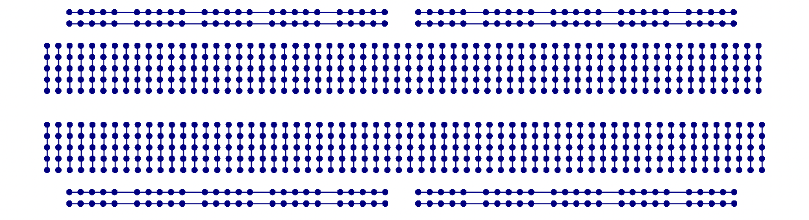
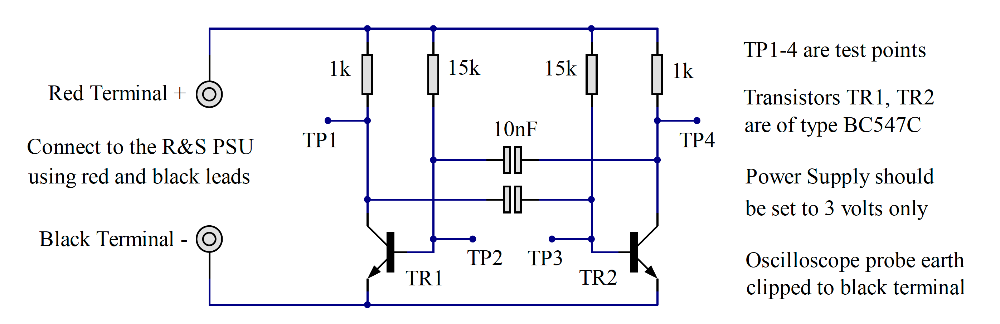
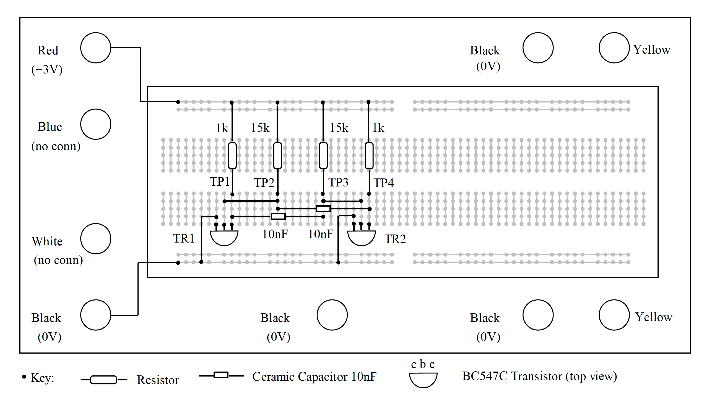
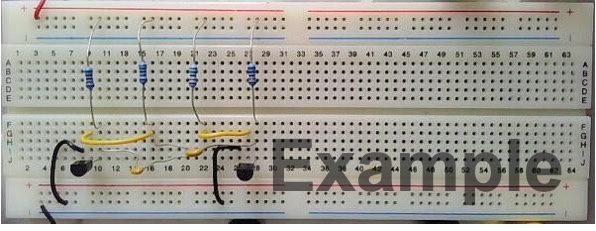

Experiment: to construct an oscillator#
This experiment will involve the construction of a two-transistor oscillator on a plug-in breadboard and then a series of measurements using the Rohde & Schwarz oscilloscope. This oscillator circuit is identical to the one we shall be using in the construction exercise later on.
Plug-In Breadboard#
{kind=link}

Fig. 117 X-ray view of the plug-in breadboard.#
If you place the plug-in breadboard under an X-ray machine, you will see the metal springs inside the plastic cover laid out, as seen in Fig. 117 above. The long horizontal tracks are used for power supply connections, and the short vertical tracks are used for the interconnection of resistors, capacitors and transistors. The plug-in breadboard is very useful for trying out experimental circuits. Components can be plugged in and interconnected with minimal fuss and without soldering. Changing a component for one of a different value takes only a matter of seconds, and after the experiment, all the parts can be recovered intact for future experiments.
Circuit Diagram#
{kind=link}

Fig. 118 Circuit diagram of an oscillator.#
Referring to the circuit in Fig. 118 above, there are only eight electronic components arranged symmetrically. The circuit symbols bear no resemblance to their practical components – for example, the transistors are black plastic D-shapes with three wires emerging from one end, and the capacitors are little blue or yellow discs. The theoretical circuit must be translated into a practical layout on the plug-in breadboard, taking into account the physical size of the components and their connections. A recommended layout is given in Fig. 119 below. There are six wire links – four on the breadboard and two between the breadboard and the red and black terminals. These can be cut from single-strand insulated wire.
{kind=link}

Fig. 119 Suggested Layout on Plug-in Breadboard.#
Resistors can be identified by their coloured bands, but to give confidence using the Rohde & Schwarz multimeter. Switch the instrument on, and press the button labelled “Ω”. Connect a red flexible lead to the red socket labelled “VΩ” and a black flexible lead to the black socket labelled “COM”. Touch the plug ends to the component leads and read off the value on the display.
Introducing – The Rohde & Schwarz HMC 8043 Triple-Output Power Supply#

Fig. 120 Rohde & Schwartz HMC 8043 Triple-Output Power Supply#
Each workstation in the laboratory is equipped with two power supplies, the Rohde & Schwarz HMC 8043 and the Rohde & Schwarz HMC 8042. The HMC 8042 is similar to the HMC 8043, but it only has two outputs. For our laboratory introduction, either power supply can be used as only one output is necessary.
The three power supply outputs are independent, so they can be connected in series if necessary to make a “split supply”. We shall use this feature in the second-semester laboratory, EG-152. For this first experiment, only one output, CH1, will be used to power our test circuit.
The buttons on the top row, labelled CH1, CH2 and CH3, determine which power supplies are selected for setting voltage and current limit. The second row of buttons labelled CH1 ON/OFF, and so on are used to isolate individual outputs. Finally, there is a button labelled MASTER ON/OFF, which disconnects all power supply outputs from the red and blue terminals.
In Fig. 120 above, the HMC 8043 only has one output selected, CH1 (you can see that the button is illuminated). On the display, CH1 is highlighted, and the cursor is positioned to allow the terminal voltage to be adjusted using the navigation buttons and wheel on the right of the power supply.
The right-hand field of the display has two functions. Until MASTER ON/OFF is selected, the current shown is the maximum allowable, also known as the current limit. When the MASTER ON/OFF is illuminated, the current shown will be the actual value delivered to the external circuit, up to the current limit.
Setting up the power supply#
Next the power supply must be set up. As mentioned in Introducing – The Rohde & Schwarz HMC 8043 Triple-Output Power Supply, each workstation in the laboratory is equipped with a Rohde & Schwarz HMC 8043 triple output power supply. Each channel can be adjusted from zero to 32 volts, with a maximum current of 3 amps. The Channel 1 output is used for this part of the experiment. The other outputs are identical to Channel 1 in capability but are not used for this experiment.
Turn the power supply ON by pressing the button in the lower-left corner of the front panel.
The display shows the settings for all three outputs, with voltage on the left and current on the right. The current shown is the maximum available from that channel.
Press the button CH1; a soft menu appears.
Press the soft key labelled Voltage; the voltage for channel 1 can be varied using the up/down arrows on the navigation control or by turning the rotary control. Individual digits can be selected using the left/right arrows on the navigation control.
Adjust the voltage to read 3V on the display, then press the rotary control to confirm.
Press the button CH1; a soft menu appears.
Press the soft key labelled Current; the maximum current (also known as current limit) can be varied using the up/down arrows on the navigation control or by turning the rotary control. Individual digits can be selected using the left/right arrows on the navigation control.
Adjust the maximum current to read 0.1A on the display, then press the rotary control to confirm.
Press the button CH1 ON/OFF; although it is illuminated, the output is still not active.
Press the button Master ON/OFF; now the channel 1 output is active, and the current display shows the ACTUAL current flowing, rather than the maximum available.
Press the button Master ON/OFF again, to isolate the output until it is needed.
Congratulations! You have set up the power supply for the experiment.
Connect the power supply to the breadboard using flexible leads with 4mm plugs at each end, observing the colour convention red = +3V, black = 0V.
Introducing the Rohde & Schwarz RTM2024 Real-Time Digital Oscilloscope#

Fig. 121 A Rohde & Schwarz RTM2024 Real-Time Digital Oscilloscope#
An oscilloscope is an essential instrument for Electronic Engineers. It provides a “window” into the circuit, showing the changing voltages as a function of time. Our standard laboratory oscilloscope is one of a series produced by Rohde & Schwarz, and, in reality, far exceeds in its specification what we need for our modest experiments. Former students often tell us that the instruments in their place of work are not as sophisticated as the ones we use every day!
Refer to the photograph shown in Fig. 121 and note the following groups of controls.
The VERTICAL group of controls selects which channels are active (currently on-screen) and allows us to move the selected trace up and down. The illuminated buttons show which channel is selected.
The SCALE control adjusts the vertical sensitivity, normally expressed in Volts per division. The POSITION control allows us to move the selected trace up and down so that it fits into the screen area. Measurements on the vertical axis can be achieved by the simple expedient of counting squares, or, more precisely, using the cursors as described later in this document.
The HORIZONTAL group of controls determines the time axis of the display. Increasing or decreasing the horizontal SCALE causes the trace to expand or contract so that one or more cycles of the waveform under examination are visible on the display. The POSITION control allows us to move the trace left and right on the display.
The two other major groups of controls, NAVIGATION and TRIGGER, will be dealt with later when we start to take some real measurements.
Setting up the Oscilloscope#
Each workstation in the laboratory is equipped with a Rohde & Schwarz RTM 2024 digital oscilloscope. This is a sophisticated instrument with many features. In this experiment we shall use two of its four input channels to view waveforms in our practical circuit.
Turn the instrument on by pressing the button POWER in the lower left corner.
To set up the vertical input CH1, press the button labelled CH1. The vertical controls will light up yellow to indicate that they are in control of channel
Rotate SCALE until the indicator at the top of the screen shows CH1: 1V; each vertical unit as defined by the grid lines now represents one volt.
To set up the vertical input CH2, press the button labelled CH2. The vertical controls will light up green to indicate that they are in control of channel 2.
Rotate SCALE until the indicator at the top of the screen shows CH2: 1V; each vertical unit as defined by the grid lines now represents one volt.
To set up the time base, refer to the controls in the box marked HORIZONTAL. Rotate the control marked SCALE until the indicator at the top left corner of the screen reads TB: 50µs. Every horizontal unit now represents a time interval of 50µs.
Press CH1 and adjust POSITION until the yellow trace is in the top half of the screen.
Press CH2 and adjust POSITION until the green trace is in the lower half of the screen.
Look to the right of the controls. Press SOURCE followed by the soft key (below the screen) to select channel one as the trigger source for the time base.<
Connect the probe for channel 1 to TP1 (the collector of one transistor).
Connect the probe for channel 2 to TP4 (the collector of the other transistor).
Connect both earth clips to suitable points on the plug-in breadboard track connected to zero volts.
Oscilloscope screen capture#
There are several ways of saving pictures captured on the oscilloscope screen. The simplest is to plug a USB memory stick into the front panel socket and press the button PRINT. The screen image will be saved onto the memory stick with automatic numbering. The size of the file depends on the mode selected. The typical size of a file type PNG is 30 kbyte, and the typical size of a file type BMP is 2.4 Mbyte.
The oscilloscope is connected to the PC using Ethernet. A utility is available to copy the oscilloscope screen directly into an open WORD document. e.g. your lab diary, using the “Add-ins” tab.
The oscilloscope can be accessed from a web browser by typing in the URL 192.168.29.2. The pages which appear allow the oscilloscope to be remote controlled and to capture the screen.
Testing the circuit#
Before turning the supply on to your oscillator ask one of the demonstrators to check that everything is correct. Then press the power supply button MASTER ON/OFF and, if all is well, two square waves should appear on the oscilloscope screen. Adjust the vertical position controls and vertical span controls if necessary to give a display like the example, Fig. 123, shown in this document.
When the traces are displayed to your satisfaction, the next step is to superimpose cursors to make time and voltage measurements of the waveforms.
Press the button labelled CURSOR.
Press the soft key labelled Measurement Type and select Voltage & Time from the drop-down menu.
Press the soft key labelled Source and select CH1 from the drop-down menu.
There should be two horizontal cursors and two vertical cursors on screen, labelled 1 to 4.
Rotate NAVIGATION until cursor 1 is at the start of a cycle. Press NAVIGATION.
Rotate NAVIGATION until cursor 2 is at the end of the same cycle. Press NAVIGATION.
Rotate NAVIGATION until cursor 3 is at the top of the yellow trace. Press NAVIGATION.
Rotate NAVIGATION until cursor 4 is at the bottom of the yellow trace. Press NAVIGATION.
Read off the period of the square wave and its amplitude from the on-screen display. The difference between C1 and C2 appears as \(\Delta t\) and the difference between C3 and C4 appears as \(\Delta t\).
Record \(\Delta t\) and \(\Delta V\) as text in your lab diary. The oscilloscope traces can be saved in your lab diary document using one of the methods outlined in Oscilloscope screen capture. Use this procedure to record the waveforms at test points TP1 and TP4. Make sure that the maximum amount of information is on the screen, including vertical and horizontal cursors and voltage and time readings along the lower edge of the screen.
Next, move the oscilloscope probe on TP4 to TP2. Now, instead of two square waves, the oscilloscope will display a square wave and a complex waveform showing the charging of one of the capacitors. Again, use the cursors to measure times and voltages and record them as text in your lab diary. Copy the screen to the PC and paste it into the lab diary
Now try varying the supply voltage. On the Rohde & Schwarz power supply, press the soft key Voltage so that the voltage field is selected, then carefully turn the navigation control to reduce the supply to 1.5V. If necessary, adjust the vertical scale of the oscilloscope channels to enlarge the traces. Use the horizontal cursors to measure and record the period (and hence frequency) of the square wave. Repeat the measurements for TP1, TP4 and TP3, and TP4 and copy the screens to the PC and your lab diary as before.
Finally, turn on all four input channels of the Rohde & Schwarz oscilloscope, and connect them to TP1, TP2, TP3, TP4 respectively. Copy the screen to your lab diary.
Laboratory Diary#
All experiments must be recorded in your lab diary (a Word document) for assessment. It is particularly important to record your observations at the time, rather than scribble them down on a random piece of paper and write them up later. You must not accumulate a backlog of incomplete experiments, so it is vital to make clear, concise notes on the spot. The objective is not to produce an impeccable lab diary but to have a clear record which could form the basis of a formal laboratory report later.
TODO: check link More information on how to set up and maintain your lab diary is available on Canvas: ✅ To Do: Obtain and Keep a Lab Diary.
Assessment#
The assessment of this laboratory introduction will be as follows:
Inspection of the lab diary. You must submit a copy of your lab diary containing screenshots of the waveforms from the oscillator circuit and from the simulation exercise that follows, with appropriate observations of voltage, time and frequency. The lab diary should also contain the answers to the questions posed in Questions which you will enter into your lab diaries and also into a Canvas Quiz for grading. A mark will be awarded out of five for the lab diary and five for the answers to the questions. You will also be given formative feedback on the structure of the lab diary so that you can address any presentation issues before the submission of a complete lab diary at the end of the module.
Inspection of the continuity tester. The technician in charge will mark the construction exercise out of 5. Marks will be taken off for poor soldering and untidy component placement. It is your responsibility to make sure that the technician in charge sees your work.
The total mark available for the laboratory introduction is 15. To put this into perspective, a typical exam question is worth about 25 marks.
The remaining 85 marks in EG-151 are carried by the formal assessment of the Microcontrollers laboratory, the project and the class test.
Example circuits and ocilloscope traces#
These images are produced for guidance. They must not be copied and included in your lab diary! Gnenerate your own versions.

Fig. 122 A photograph of the completed oscillator circuit as prototyped on breadboard.#

Fig. 123 Waveforms on Rohde & Schwarz Oscilloscope at test points 1 and 4.#

Fig. 124 Waveforms on Rohde & Schwarz Oscilloscope at test points 1 and 2.#